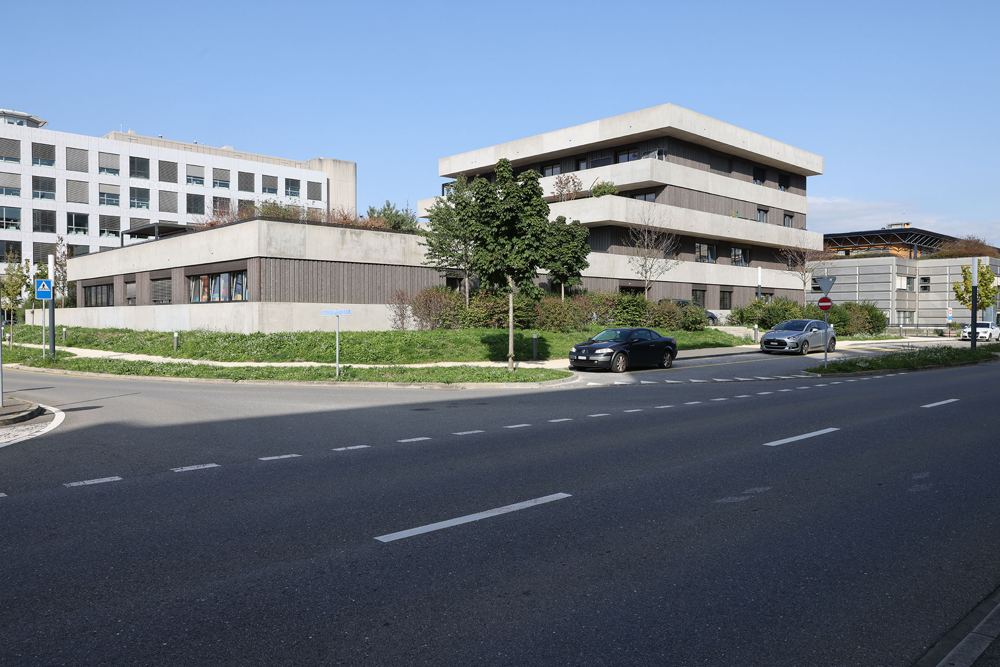

The first workshop on "The Thermodynamics of Collisionless Plasmas” will be held October 5th–7th 2026. Hosted and sponsored by the Bernoulli center at EPFL, Switzerland, with a view of Lac Léman (Lake Geneva), the workshop brings together researchers from plasma physics, statistical mechanics, and astrophysics. The aim is to connect researchers, establish a shared framework, and discuss emerging challenges. The workshop will host talks and a poster session.

View of Lac Léman

View of the Bernoulli Center
Workshop Information
Deadlines: To be determined.
Registration costs: To be determined.
Location: GA 3 34 (Bâtiment GA), Station 5, CH-1015 Lausanne, Switzerland.
Additional Details
Recommended travel: The Bernoulli Center is located on the EPFL campus. Geneva airport (GVA) is the nearest airport, around 50 minutes by train to Lausanne. Zurich airport (ZRH) is located 2.5 hours by train from Lausanne. Train timetables are available here. Some possible routes to the Bernoulli Center are as follows.
From Geneva airport: Take a train to Morges, then bus line 701 from Morges Gare to Ecublens VD, Champagne.
From Lausanne: Take metro line M2 from Lausanne-Gare station in the direction of Croisettes, get off at Lausanne-Flon and take line M1. Travel on M1 in the direction Renens-Gare, get off at Unil-Sorge and walk 8 minutes to the Bernoulli Center.
Alternatively from Lausanne: Take bus line 1 from Lausanne-Gare station, travel in the direction EPFL/Colladon, get off at Ecublens VD, Champagne and walk 5 minutes to the Bernoulli Center.
Recommended hotels: The EPFL campus has two hotels to welcome you: the SwissTech Hotel and the Starling Hotel. In addition, there are hotels and apartments next to the EPFL campus and in Lausanne to suit all budgets. Hotels in Lausanne provide a free transit card to travel in and around the city for the duration of your stay (max 15 days). You must ask for the card at the hotel reception. Moreover, you can use public transport free of charge in Lausanne (metro & bus) on the day of your arrival to reach your hotel; but you will need to show your hotel booking and a proof of identity.
Team: R. Mackenbach (EPFL, CH): Main organiser, D. Stiebrina (EPFL, CH): Administrative coordinator, R. Ewart (Princeton, US): Scientific committee, P. Helander (IPP Greifswald, DE): Scientific committee